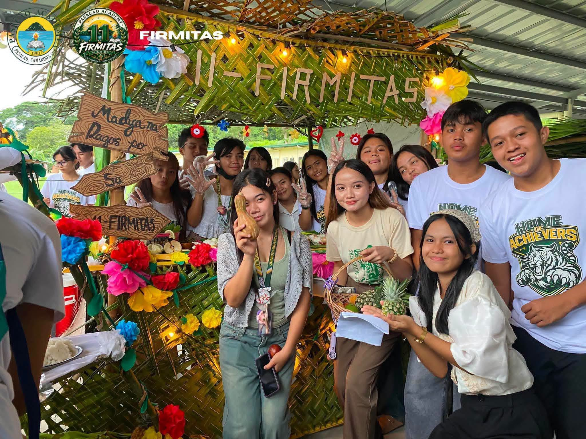
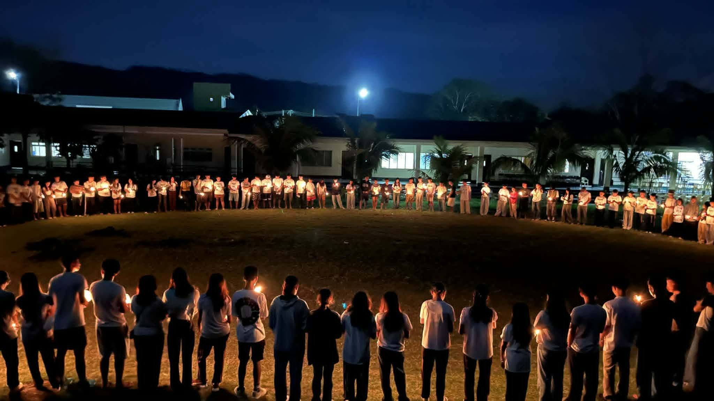
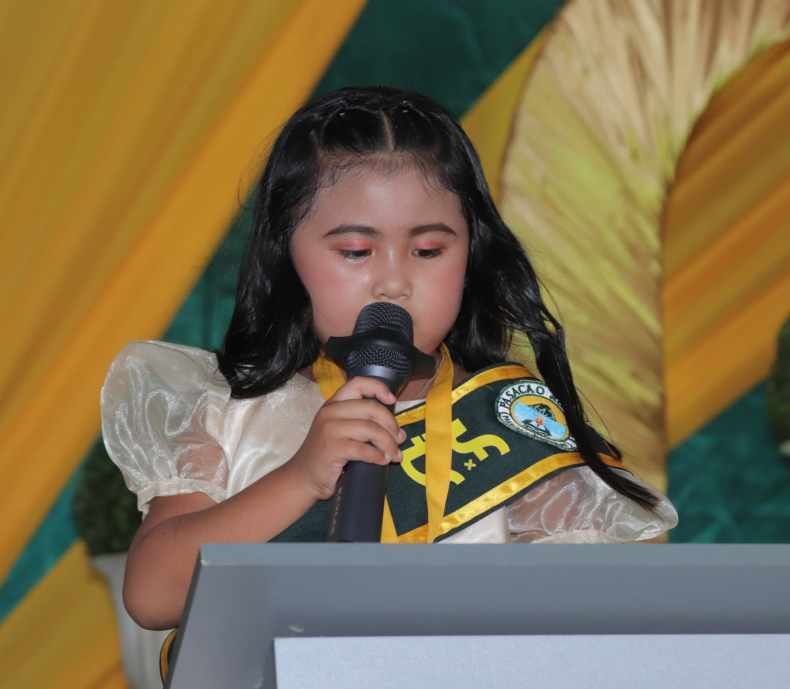
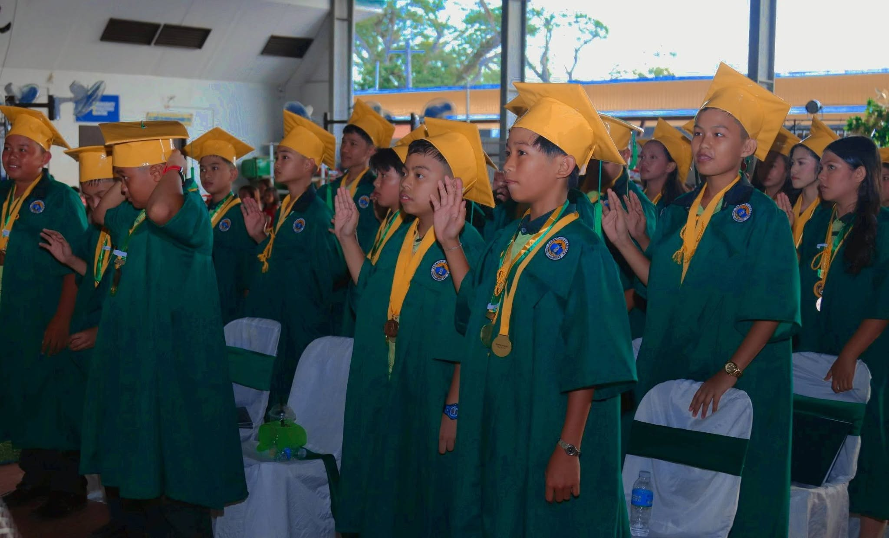
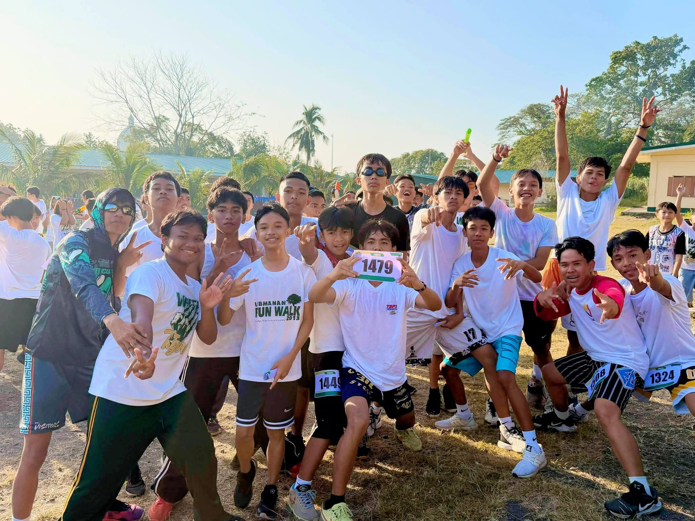

Annual Graduation Ceremony 2025
Graduation is more than the end of an academic journey—it is the beginning of a new chapter filled with opportunities, challenges, and dreams waiting to be fulfilled.
At Pasacao Academy, we proudly celebrate the achievements of our graduates who have demonstrated dedication, perseverance, and commitment throughout their years of learning. Each graduate carries not only the knowledge and skills gained inside the classroom, but also the values, friendships, and experiences that have shaped them into the individuals they are today.
This special occasion is a celebration of hard work and determination. It is also a moment to recognize the unwavering support of parents, teachers, school personnel, and everyone who guided our students along their journey.
As our graduates step beyond the halls of Pasacao Academy, may they continue to dream boldly, pursue excellence, and use their education to make a meaningful difference in their families, communities, and society. Congratulations, Pasacao Academy Graduates! 🎓
Read More August 2, 2026
August 2, 2026
The 𝗦𝘂𝗽𝗿𝗲𝗺𝗲 𝗦𝘁𝘂𝗱𝗲𝗻𝘁 𝗚𝗼𝘃𝗲𝗿𝗻𝗺𝗲𝗻𝘁 (𝗦𝗦𝗚) and 𝗦𝘂𝗽𝗿𝗲𝗺𝗲 𝗣𝘂𝗽𝗶𝗹 𝗚𝗼𝘃𝗲𝗿𝗻𝗺𝗲𝗻𝘁 (𝗦𝗣𝗚), together with our School President, 𝗗𝗿. 𝗭𝗮𝗻𝗱𝗿𝗼 𝗩. 𝗩𝗶𝗹𝗹𝗮𝗻𝘂𝗲𝘃𝗮, the School Principal, 𝗠𝘀. 𝗥𝗮𝗾𝘂𝗲𝗹 𝗙𝗲𝗿𝗻𝗮𝗻𝗱𝗲𝘇-𝗡𝗮𝗯𝗼𝗻𝗴, and some faculty and staff gathered for a wonderful initiative, the 𝗚𝗮𝗿𝗱𝗲𝗻 𝗼𝗳 𝗣𝘂𝗿𝗽𝗼𝘀𝗲: 𝗔 𝗦𝗰𝗵𝗼𝗼𝗹 𝗚𝗮𝗿𝗱𝗲𝗻𝗶𝗻𝗴 𝗔𝗰𝘁𝗶𝘃𝗶𝘁𝘆.
This meaningful activity went beyond planting; it cultivated leadership, responsibility, teamwork, and environmental stewardship. By working hand in hand, our student leaders demonstrated that genuine leadership is not only about guiding others but also about serving the community, caring for the environment, and inspiring positive change through action. Every plant is a symbol of hope, every garden nurtured is a testament to commitment, and every leader who chooses to serve helps a community grow. Just as every plant must first 𝗦𝗣𝗥𝗢𝗨𝗧 before it flourishes, every Academian is called to develop character, embrace responsibility, and grow with purpose. 𝗧𝗼𝗴𝗲𝘁𝗵𝗲𝗿, we 𝗦𝗣𝗥𝗢𝗨𝗧 with vision, lead with purpose, and cultivate a future rooted in service, sustainability, and excellence.
PASACAO ACADEMY hosts scholars from around the PASACAO CAMARINES SUR .
Read More
July 29, 2026Inter-Collegiate Sports Festival 2026
CLast July 29, 2026, our 𝗦𝗲𝗻𝗶𝗼𝗿 𝗛𝗶𝗴𝗵 𝗦𝗰𝗵𝗼𝗼𝗹 𝗔𝗰𝗮𝗱𝗲𝗺𝗶𝗮𝗻𝘀 transformed fresh and nutritious ingredients into stunning masterpieces during the 𝗙𝗼𝗼𝗱 𝗔𝗿𝘁 𝗔𝗿𝗿𝗮𝗻𝗴𝗲𝗺𝗲𝗻𝘁 𝗔𝗰𝘁𝗶𝘃𝗶𝘁𝘆. Blending creativity with the value of proper nutrition, they proved that healthy food can be both nourishing and beautiful.
With creativity, teamwork, patience, and attention to detail, our students turned simple and healthy ingredients into eye-catching food presentations. The activity allowed them to express their artistic talents while developing a deeper appreciation for the importance of proper nutrition and healthy eating habits.
Congratulations to our talented students for their outstanding creations and for demonstrating that healthy food can be both delicious and visually appealing. This activity not only nurtures their creativity but also instills in them the importance of making mindful choices for a healthier lifestyle.
More than just creating beautiful food, the activity encouraged our Senior High School students to understand that making healthy choices can be enjoyable, creative, and rewarding. It also provided an opportunity for them to strengthen their confidence, cooperation, and problem-solving skills while working together toward a common goal.
Read More
February 26 2026Community Outreach Program
ast February 26-28, 2026, our Grade 6 to Grade 12 students participated in 𝗔𝗡𝗔𝗠𝗡𝗘𝗦𝗜𝗦, a 𝗰𝗵𝗮𝗿𝗮𝗰𝘁𝗲𝗿 𝗳𝗼𝗿𝗺𝗮𝘁𝗶𝗼𝗻 activity designed to nurture their hearts and sharpen their values. Anamnesis is a Greek word which means “remembrance”. In education and character formation, it refers to the process of deeply remembering truths, values, experiences, and identity that shape a person’s moral and intellectual growth. Rather than simply “learning new information,” anamnesis suggests that education helps a person rediscover what is good, true, and meaningful within themselves and their experiences. Their respective class advisers facilitated the well-designed modules. They guided their students to remember and recognize values such as honesty, compassion, discipline, and responsibility through reflection and experience. At Pasacao Academy, we build the foundation of who our students will become. Through Anamnesis, our learners explored what it means to lead with integrity, act with kindness, and grow with purpose.
Read More𝗧𝗵𝗲 𝗚𝗿𝗮𝗻𝗱 𝗥𝗲𝘁𝘂𝗿𝗻: 𝗠𝘀. 𝗣𝗮𝘀𝗮𝗰𝗮𝗼 𝗔𝗰𝗮𝗱𝗲𝗺𝘆 𝟮𝟬𝟮𝟲👑✨
On March 10, 2026, Pasacao Academy marked a historic milestone in its enduring legacy. In solemn celebration of our 65th Foundation Anniversary, the institution proudly revived one of its most cherished traditions: Ms. Pasacao Academy. After an 11-year, the pageant returned to the spotlight, serving as a testament to the school's commitment to holistic excellence. The evening was not merely a display of pageantry, but a formal recognition of the quintessential Academian spirit. 𝗠𝘀. 𝗣𝗮𝘀𝗮𝗰𝗮𝗼 𝗔𝗰𝗮𝗱𝗲𝗺𝘆 𝟮𝟬𝟮𝟲: Ms. Aliya Reann Rose C. Imperial 👑
Read More
April 16, 2026𝗔 𝗟𝗲𝗴𝗮𝗰𝘆 𝗼𝗳 𝗘𝘅𝗰𝗲𝗹𝗹𝗲𝗻𝗰𝗲: 𝗞𝗶𝗻𝗱𝗲𝗿𝗴𝗮𝗿𝘁𝗲𝗻 𝗠𝗼𝘃𝗶𝗻𝗴 𝗨𝗽 𝗮𝗻𝗱 𝗚𝗿𝗮𝗱𝗲 𝟲 𝗖𝗼𝗺𝗺𝗲𝗻𝗰𝗲𝗺𝗲𝗻𝘁 𝗘𝘅𝗲𝗿𝗰𝗶𝘀𝗲𝘀 𝟮𝟬𝟮𝟲✨🎓
The New Evacuation Center at Balogo Junction was filled with a sense of profound pride and promise on April 8, 2026, as Pasacao Academy celebrated two major milestones: the 11th Kindergarten Moving Up Rites and the 16th Elementary Commencement Exercises.
Under the timely theme, "𝙁𝙞𝙡𝙞𝙥𝙞𝙣𝙤 𝙂𝙧𝙖𝙙𝙪𝙖𝙩𝙚𝙨: 𝙋𝙧𝙚𝙥𝙖𝙧𝙚𝙙 𝙩𝙤 𝙇𝙚𝙖𝙙 𝙬𝙞𝙩𝙝 𝘾𝙤𝙢𝙥𝙚𝙩𝙚𝙣𝙘𝙚 𝙖𝙣𝙙 𝘾𝙝𝙖𝙧𝙖𝙘𝙩𝙚𝙧,” the ceremony highlighted the institution's commitment to nurturing not just academic achievers, but future leaders grounded in integrity.
In a world that demands both knowledge and character, Pasacao Academy's graduates are stepping forward as beacons of hope and exemplars of the Filipino spirit. The event was a celebration of their hard work, resilience, and the unwavering support of their families and educators.
Congratulations to the Class of 2026!✨🎓
Read More
April 16, 2026𝗔 𝗟𝗲𝗴𝗮𝗰𝘆 𝗼𝗳 𝗘𝘅𝗰𝗲𝗹𝗹𝗲𝗻𝗰𝗲: 𝗞𝗶𝗻𝗱𝗲𝗿𝗴𝗮𝗿𝘁𝗲𝗻 𝗠𝗼𝘃𝗶𝗻𝗴 𝗨𝗽 𝗮𝗻𝗱 𝗚𝗿𝗮𝗱𝗲 𝟲 𝗖𝗼𝗺𝗺𝗲𝗻𝗰𝗲𝗺𝗲𝗻𝘁 𝗘𝘅𝗲𝗿𝗰𝗶𝘀𝗲𝘀 𝟮𝟬𝟮𝟲✨🎓
The graduates stood as a testament to the Filipino spirit—resilient, capable, and ready to serve. The halls echoed with cheers as students received their diplomas and certificates, symbolizing their readiness to face the challenges of a rapidly changing world.
As they embark on the next chapter of their lives, these graduates carry with them not only the knowledge and skills acquired at Pasacao Academy but also the values and principles that will guide them in their future endeavors. They are now equipped to lead with integrity, innovate with creativity, and contribute meaningfully to society.
Congratulations to the Class of 2024! May your journey ahead be filled with success, fulfillment, and the continued pursuit of excellence.
Read MoreNew Scholarship Program Launched
On March 11, we formally commenced the celebration of our 65th Foundation Anniversary. The opening day of this milestone event was characterized by a profound sense of harmony as we inaugurated the festivities with our official Opening Program.
Aligned with this academic year’s musical theme, the Kindergarten and Elementary took center stage for their respective field demonstrations. From the disciplined, rhythmic formations of our primary students to the vibrant performances of our youngest learners, the field became a showcase of talent, dedication, and school spirit. It served as a magnificent "Opening Act" for a legacy that has been sixty-five years in the making
Read More
March 12, 2026International Partnership Agreement
The energy was truly electric on March 12, 2026, as we kicked off Day 2 of the 65th Foundation Anniversary of Pasacao Academy with an exhilarating Fun Run that brought our entire community together in stride. Once the last runner crossed the finish line, the celebration continued with a high-octane Zumba session where students, faculty, and alumni traded their running pace for dance moves.
After working up a serious appetite on the dance floor, everyone gathered to enjoy a well-deserved snack and share stories from the morning's activities. It was a morning filled with sweat, laughter, and school pride, proving that sixty-five years of excellence looks even better when we are all moving together toward a brighter future.
Read More